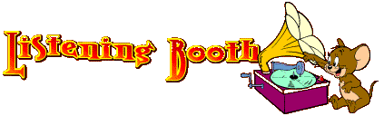

|  |
|
|
DOWNLOAD AS .ZIP FROM MEGA (MP3) |
The original soundtrack to a retro dungeon crawler-microgame compilation hybrid made in a week and some change by some friends and I for GBJAM 6, an annual game jam where the theme is to make something in the style of a GameBoy game.
If there's any statement I think the entire dev team could agree with, it's that working on this thing was an absolute fucking nightmare. Each individual on the team had a strong creative vision and technical skill to back it up, but making a game this complex in only a week's time is stressful and mentally draining. Though honestly, you wouldn't know if you played it - it's a wacky game bursting with character and densely packed with layers upon layers of gags, references and inside jokes.
I say it was stressful but honestly compared to the game's core staff I ended up having it on the easier side. I had a lot less creative input on the final product than I originally thought, which was a blessing in diguise because it allowed me to divert most of my attention to making the music. And I think in the end I'm proud of how it came out, especially for having been done in only a week.
Everything was done in DefleMask, barring the arranged version of Unfit Elegy which was done in the usual FL Studio. I'm less used to working in trackers than I am in piano roll based DAWs so it was a little bit of a challenge, but I really wanted it to be as authentic as I could manage it. DefleMask is a pretty solid program and I still use it whenever I can if I'm doing any kinda chiptune.
I should probably also mention I did all the sound effects for the game too. I can't actually remember if I used bfxr or LabChirp, I think maybe it was LabChirp. bfxr is a great program but I just remember being sick of how it sounded because it felt like everyone was using it in indie games and you could immediately tell whenever it was being used. But that's probably more the fault of its userbase overusing the preset parameters than the actual program itself. And it may have gotten better since then, I haven't checked back on it in a while.
Click on a track for more info.
The main theme of the game!!! Woah bro!! Woah!! Main theme! Main theme
Not a lot I can remember about like, where this came from. iirc I just kinda tried to think of something upbeat and catchy. I do call it the main theme but weirdly the credits theme kinda became more of a main theme. Sometimes I wonder if I shoulda made an arranged version of this instead of the credits music. Oh well.
A lot of my favorite Nintendo composers from around this time (I guess I'm mainly thinking about Kazumi Totaka's stuff, especially his work on Super Mario Land 2) made heavy use of leitmotif, so this game does that. You can hear the main theme repeated a couple times in other tracks throughout the game.
I'm also a little sad that there's a glitch on the Newgrounds version of the game where the title theme doesn't play, so if you wanna hear this ingame you either have to download it or play it on the itch.io page.
[INSTRUMENTAL]
Another bit of leitmotif, this has the same melody as Imaginary Friend. I'll talk more about it later but Imaginary Friend was actually the first song I wrote for the game.
When I wrote this one I actually pictured a sort of Zelda-style text crawl in my head, I didn't realize it would just be two screens of stationary text you'd progress through. If I'd known that I'd have probably made it shorter. Ah well.
[INSTRUMENTAL]
Would you look at that? It's another leitmotif, this time a variation on the title screen music. I'm gonna get tired of typing the word leitmotif aren't I.
Probably my least favorite of the floor themes but that's probably only because the other ones came out so energetic by comparison. Listening to this now is making me think about how challenging it was to do drums with the GameBoy soundchip. You don't really get DPCM samples, which is what you usually use for drums on the NES, all you really get is a single noise channel, so it was really interesting trying to figure out how to manipulate it to simulate different drum sounds - low for bass drum, medium for snare, high for high hats, etc. In this song I can't remember for the life of me how I figured out how to get that kinda "triangle" sound, I'm looking through the file and it's something to do with switching the Noise Polynomial Counter Mode back and forth between 7 and 15. (whatever the fuck that means)
[INSTRUMENTAL]
I really like this one. I feel like there's probably a video game track that obviously influenced this but for the life of me I can't think of it, I feel like there's definitely a Zappa or Cardiacs vibe on it though with the kinda wacky expressiveness to it and the "trying to shove as many notes as possible into as small a space as possible"-ness to it.
There's kind of a climbing portamento scale in there (it first appears at around 9 seconds in) that was influenced by a bit in the theme from the TV show CHiPs of all places. No real thematic reason why, I just thought it would be neat.
At some point after the production of the game we were actually thinking of doing an enhanced remake of the game that would feature reorchestrated music and extra material, but that never really got off the ground and it's probably not gonna happen. At the time though I remember being excited enough by the idea though that I attempted to remake this song with more realistic sounding instruments, but it's never really seen the light of day, at least until now because here it is
[INSTRUMENTAL]
I figured a marching band type song would fit well with the Sports-themed collection of minigames... you know, because high school football games have marching bands at half time? right? I think. There's probably parts of this that are combinations of two different Weird Al songs if you could believe it - a little bit of Sports Song, with the ending bit sounding a little like a bit in Polkamon.
A fun fact about this one- as of right now (December 2020) the youtube video of this song has more views than any of the other videos for tracks from this album. The other ones are in the single to double digits, while the video for this one has almost 200. I suspect the reason for this may be its title - the XXX may be attracting porn bots or something? Not sure.
The title, by the way, is a double reference- a lot of the track titles on the Gurren Lagann soundtrack substitute words for "XXX" ostensibly to create innuendos (Pierce the Heavens With Your XXX, My XXX is the Best in the Universe, He is so XXX, etc), I did this with the title of the Cartoon Network show My Gym Partner's a Monkey. Why? I guess to fit with the like, school sports team marching band kinda thing... I dunno
Anyway this was a fun track to do. It's always a cool challenge to try to replicate genres or real life musical textures as closely as possible using only chip. Here, the typical marching band sound of a brass section doubled by glockenspiel is a 12.5% pulse wave doubled with a high pitched square wave that has a split second of an octave up in the arpeggiator on every note, to get that kinda "chirping" that sounds percussive.
This was one of the songs where a part sadly had to be cut out because of a limitation we were working within- You'll notice that none of the songs on the soundtrack really have "intros" or "loop points", the entire songs all have to just loop into themselves seamlessly. I completed this song before I knew we didn't have time to implement intro and loop point functionality in the songs so there's a really tiny intro bit that had to get chopped off for the final game.
[INSTRUMENTAL]
The title of this one, as well as the concept of associating surf rock with sci-fi concepts altogether, are a really overt nod to the band Man or Astro-Man? which admittedly I need to listen to more of. This was another instance where I was trying to use chip to replicate common genre textures, like the way the worbly arpeggios kind of sound like big open surf rock guitar chords.
The beginning also makes use of a really cool trick I wanted to try out where you switch the wave shape of the instrument in the noise channel so that it has this kinda metallic clanging sound to it, and if you use it right you can create melodies with it. I think the most well-known recent example of it is in Metal Crusher off the Undertale OST.
There are early versions of the song where I tried to use the metallic clanging with some theremin-esque portamento waves to get more of a monster movie soundtrack vibe but I thought the results came out a little obnoxious so I gradually dialed back the clanging and went for a more surf rock sound. This track honestly might be the track that went through the most changes from the start of its composition to the final version.
[INSTRUMENTAL]
This song was meant to sound weird and off-kilter, and I always jump at the chance to use weird time signatures in things, so this is a waltz but in 7/4. I dunno if you could technically call it a waltz because I think a waltz has to be in 3/4 but its almost like... a parody of a waltz? because it's two measures of 3/4 and then one extra beat... I dunno man, I'm no Stravinsky, I just make funny bleep bloop sounds.
There are earlier versions of this song in 4/4 but I thought I could probably stand to make it sound weirder
[INSTRUMENTAL]
An easter egg I still think is kinda neat is that this song is technically the same melody as the title theme, like it's all the same notes in the same order, the timing is just screwed up so much that it's hard to tell. There's also static running under the whole thing to give it kind of a weird... foggy transmission feeling? like a soviet numbers station or Slenderman or something.
[INSTRUMENTAL]
Another one I can't remember much about. I do know that every time I do a chip song with a really bluesy or guitar solo-y sounding lead with a lot of slides and portas, and I have a lot of arpeggios, I'm definitely thinking about Tim Follin's stuff.
[INSTRUMENTAL]
Gonna be real I was listening to Bad Apple a lot and I just wanted to make a song that sounded like it. I think the tune goes in a different direction but the drums are almost embarrassingly close.
[INSTRUMENTAL]
Galaxy High (ギャラクシー・ハイスクール) is an American-Japanese science fiction animated series that premiered on September 13, 1986 on CBS and ran for 13 episodes until December 6, 1986.[1] The series was created by Chris Columbus and featured music and a theme song composed by Don Felder.[2][3] The series was later shown in reruns on Sci-Fi Channel's Cartoon Quest. Contents 1 Synopsis 2 Cast 3 Crew 4 Episodes 5 Production notes 5.1 Film 5.2 Series tie-in 5.3 Airdates 6 Awards 7 Legacy 8 Home media 9 References 10 External links Synopsis Two Earth teenagers are accepted into the intergalactic high school Galaxy High School on the asteroid Flutor. The teenage boy, Doyle Cleverlobe, was a skilled athlete and popular, while the teenage girl Aimee Brighttower was shy and, as the theme song states, "the smartest girl in school, not very popular, not very cool."[4] But once in space, their roles are somewhat reversed. The alien teenagers seem to accept the not-so-popular Aimee, while Doyle tends to rub the aliens the wrong way. Although Doyle finds himself an outcast and having difficulties adjusting, Aimee does not abandon him, and suggests he can make friends and bring glory to Galaxy High through his excellent sporting abilities, which he does by winning a championship in "psych-hockey", which Galaxy High had always lost in the past. The show drops many hints of a budding romance between Doyle and Aimee, but was never given time to grow due to the show not being renewed for a second season. The aliens in the school included Gilda Gossip, the girl with a big mouth (or mouths), Booey Bubblehead, who has a bubble for a head and is absent-minded, Milo de Venus, the six-armed class president, Beef and the Bonk Bunch who bully Doyle (and just about every student at Galaxy High), and the Creep, a small alien who resembled something between a very fat cherub and a marshmallow and had a huge crush on Aimee, which would often reveal itself as he serenaded like a Las Vegas lounge singer. The teachers are even more unusual than the students: Ms. Biddy McBrain has a light bulb attached to her head, while Coach Frogface eats flies and Professor Icenstein has to keep his classroom cold or he will melt. Cast Hal Rayle as Doyle Cleverlobe Susan Blu as Aimee Brightower Howard Morris as Professor Icenstein and Luigi La Bounci (plus other miscellaneous voices) Pat Carroll as Ms. Biddy McBrain Nancy Cartwright as "Flat" Freddy Fender and Gilda Gossip Guy Christopher as Earl Eccchhh Gino Conforti as Ollie Oilslick the cabbie and Reggie Unicycle Jennifer Darling as Booey Bubblehead, Myrtle Blastermeier and Wendy Garbo Pat Fraley as Coach Frogface and Sludge the janitor Henry Gibson as Doyle's locker David L. Lander as Milo de Venus Danny Mann as the Creep Neil Ross as Rotten Roland John Stephenson as Beef Bonk and Harvey Blastermeier Crew Howard Morris - Voice Director Episodes No. Title Written by Original air date 1 "Welcome to Galaxy High" Chris Columbus September 13, 1986 Earth teens Doyle and Aimee arrive at Galaxy High, where football star Doyle expects to enjoy even more popularity than he did on Earth. They are given a tour by the six-armed Milo de Venus. Much to the surprise of Doyle (who never studied), he now finds himself unpopular, while Aimee, the smartest (and unpopular) kid at their old school, quickly makes friends here (Wendy Garbo, Booey Bubblehead, and Gilda Gossip). Milo points out that the male population of Galaxy High outclassed the female students and that Doyle is nothing special compared to Aimee. Because of her good grades, she is given a scholarship and a space car, while Doyle is made to get a job at a pizza place (where Milo also works) to pay his tuition, and gets only a scooter. He also quickly earns the enmity of a group of bullies called the Bonk Bunch, whose leader, Beef Bonk, hates Earth. However, when Beef challenges him to a game of Zuggleball, which is similar to hockey (but with a living puck), Doyle wins, and gains a measure of popularity at his new school. Although Aimee says Doyle is once again a star, a more mature Doyle admits the popularity may be hard to maintain, and that he needs to start showing more respect for others. 2 "Pizza's Honor" Larry DiTillio September 20, 1986 Luigi receives an order of 100 pizzas, to be delivered to the planet Tingler, which is supposedly haunted. Everyone is afraid of that planet. While Milo is made to assist Luigi in baking the pizzas, Doyle is ordered to travel to Tingler to make the delivery! Doyle agrees to do his assigned job to maintain "pizza's honor," as Luigi has a reputation for delivering pizzas to anywhere in the galaxy. Doyle then gets a reputation for bravery, gaining the admiration of the girls, and the Galaxy High students then laugh at Beef that an Earth boy has more courage than he does! This causes Beef, Roland, and Earl follow and try to scare Doyle, causing both of them to crash on the planet. As Doyle is worried that Luigi's pizza shuttle is banged up, he is encountered by a green-clawed alien! However the alien identifies himself as Mutie, a repairman, and offers to repair the pizza shuttle for a reduced price since Doyle is Mutie's first customer in 10 years. While Doyle's shuttle is being repaired, he makes the delivery to Tremble Hall, and the Bonk Bunch continue planning to scare Doyle, and also plan to steal his money after the delivery, to pay for Beef's hot rod to be repaired. Doyle learns that Tingler is not what it seems, and the Bonk Bunch are more scared of the species on Tingler! 3 "The Beef Who Would Be King" David Weimers Ken Koonce September 27, 1986 After watching a series of practical jokes between Beef and Doyle, aliens from the planet Cholesterol show up, wanting to make Beef their "High Cholesterol." Aimee thinks Doyle would make a better king, so she challenges Beef to a space rally on Doyle's behalf. Doyle wins the race, but since Beef cheated, which is what the aliens wanted, he is made their leader. However, after Professor Icenstein tells Doyle and Milo that every year the Cholesterols find the worst man in the entire galaxy, crown him king, then eat their leader! Doyle and Milo think that Beef may have gotten what he deserved until Aimee convinces Doyle to do the right thing and rescue Beef. When Aimee's space car shorts out, Doyle must get to Cholestorol by himself (during a chase, Cholesterols can be heard chanting "Where's the beef?"). As Doyle is about to be thrown into a canyon, Beef grabs him, causing the Cholesterols to say that he has forfeited his position due to no longer being the worst man in the universe. After their ordeal together, Doyle expects he and Beef will be on better terms, but Beef cannot resist being antisocial again. 4 "Where's Milo?" Eric Lewald Larry DiTillio October 4, 1986 A series of accidents causes all of Milo's friends to ostracize him, and then another accident causes Luigi to fire him. So he signs a contract with a store owner named Al Gatori, who is interested in his six arms but it is actually a trick...the fine print has him agreeing to become a living mannequin, and Gatori shoots him with a freeze ray. When they find him, and Gatori shows them the contract, they figure Milo would not have agreed to that willingly. Doyle commands a rescue mission for Milo, but he needs all the group who had snubbed Milo to carry out his plan. Doyle manages to convince them after he makes them all realize that when they were all at one low point or another, it was Milo who was steadily loyal to them. 5 "Those Eyes, Those Lips" Karen Wilson Chris Weber October 11, 1986 All the girls are excited that rock star Mick Maggers is going to give a concert at Galaxy High, especially Booey, who is a big fan and has sent him many letters. Unfortunately, the concert is sold out. Aimee decides to help find a way for Booey to meet Mick. Meanwhile, Beef is planning to take Wendy to the concert, and in order to get in, he and his gang get jobs as security for Mick. But a pizza monster has kidnapped Wendy, with whom it apparently had fallen in love. Doyle had to chase the monster down, since he had created it by adding a special ingredient called Tog, given to him by some aliens. Booey sneaks onto Mick's ship, where she meets someone calling himself James, who wants to help her, but asks her what is so great about Mick Maggers, as he is just some guy, and Booey says Mick's music speaks to her. Aimee, Gilda, and Milo continue trying to help Booey, while the Bonk Bunch continue keeping them out. But in the end, James does help everyone, and has a surprise for them... 6 "Doyle's New Friend" Jina Bacarr October 18, 1986 Everyone is getting ready for the Hands Across the Universe Dance, of which they expect Aimee will be voted Queen. Beef plans to become King of the Dance, though no one has voted for him. Meanwhile, Doyle befriends a student from another high school named Wolfgang Armadillos, who has come for the dance. But when Doyle's friends get upset by Wolfgang's pranks, Beef recruits Wolfgang into the Bonk Bunch. They get him to switch ballot boxes in the election for King and Queen, but Wolfgang ends up tricking Beef and winning back Doyle and the others... 7 "Dollars and Sense" Ken Koonce David Weimers October 25, 1986 At Luigi's, everyone is getting ready for the return of ultra-rich student Reginald Unicycle. Wendy wants him, but when he sees Aimee, he falls for her. She starts dating him, but her friends are suspicious of him, and the Creep is completely jealous. When Ms. McBrain tells him that Reggie has the Midas Touch, he thinks Reggie is going to turn Aimee into gold. He convinces Doyle and the others to go to the Platinum Planet to rescue her, at a party Reggie throws for her at his parents' mansion...where there just happens to be a golden statue that he has had made of her, which the Creep and the others mistake for Aimee. Eventually, Aimee realizes Reggie, who has dated many girls around the galaxy, is not really as interested in her as he thinks he is, so she returns to Galaxy High. 8 "Beach Blanket Blow-Up" Ken Koonce David Weimers November 1, 1986 Doyle wants to go with Wendy to Fort Lauderoid for Spring Break, so he tricks Aimee into loaning him her car. She is upset when she learns the truth, but Doyle cannot go anyway, because he failed Professor Icenstein's course, and needs to do a science project to earn enough to pass it. Meanwhile. Reggie takes everyone to the beach on his space yacht. Aimee realizes that she likes him, and Gilda and Booey convince her that he likes her too. Meanwhile, Doyle passes his extra credit work about supernovas, but discovers that Fort Lauderoid's sun is going to go supernova, so he and Icenstein go to warn everyone (though Icenstein melts, so Doyle must carry him in a glass). Aimee thinks Doyle's come to ask her to go steady, but he tells everyone about the supernova; however, everyone thinks that it is a joke at her expense (the episode's title is a parody of the movie Beach Blanket Bingo, starring Frankie Avalon and Annette Funicello, whose names are also parodied in this episode as Frankie Avalunar and Comet Moonicello. In addition, Fort Lauderoid is a parody of Fort Lauderdale).) 9 "The Brain Blaster" David Weimers Ken Koonce November 8, 1986 Doyle is good at the game of psych-hockey, and the entire school becomes fans when he wins game after game. However, this is also putting him under a great deal of pressure as Doyle is struggling academically and Coach Frogface is demanding that he hit the books, as Galaxy High has had a lousy history at psych-hockey, but now Doyle is their big chance to win a long-awaited championship. A shady character called Punk McThruster offers the use of a Brain Blaster to enhance Doyle's knowledge. Doyle refuses, but after finding a Cosmic Literature test too difficult, he reconsiders. Of course, the first hit of brain waves is free, but after that it gets costly, and Doyle has more tests to pass if he wants to remain eligible to play sports. So he soon has to start stealing to support his new habit. But using the Brain Blaster costs Doyle more than financially, it also takes quite a toll on his mind, making him much dumber than usual in anything other than the subjects that the device enhances for him. Soon he is really messed up, and desperate to keep using the device, not just for classes, but to feed his addiction to it. When Punk's supplier gets busted, he tells Doyle that his only option for finding more brain waves is to go to a dangerous place called South Andromeda. Luckily, his friends had found out from Ollie where he had gone, and show up to rescue him. But when they find out that he has gotten a hold of a jar of brain waves, they dispose of it, which makes Doyle reluctant to play in the psych-hockey championship, believing that he cannot win without the Brain Blaster. However, an ironic turn of events demonstrates to Doyle that using a Brain Blaster is cheating... 10 "The Brat Pack" Marc Scott Zicree November 15, 1986 Beef gets his hot rod souped up, and uses it to irritate Doyle and his friends, but ends up crashing into the teacher's table outside. So Ms. McBrain punishes him by making him teach a group of elementary school kids, who end up tormenting Beef. He gets them to behave by promising to take them on a field trip to an amusement park called Nova Land, but in order to do so he needs Ms. McBrain's permission to take the kids off campus, to which she has been notoriously stingy in granting. Beef decides to take them anyway, and Aimee, Doyle, and Milo, who are on monitor duty, agree to help... 11 "Founder's Day" Larry DiTillio November 22, 1986 On Founder's Day, the anniversary of the founding of Galaxy High, Beef chases Doyle, Aimee, Milo, and the Creep into Professor Icenstein's classroom, where they hide inside one of his inventions. Beef and Roland activate the device, which turns out to be a time machine, and Doyle and his friends find themselves in the past, on the barren asteroid Flutor, which is where Galaxy High is located. The Flutorians charge them 5,000 megacredits for "discovering" the place, and if they do not pay, they will destroy the asteroid...which means Doyle and the others would have no return. Then a younger Luigi appears, only his original business was a pancake house and Binny McBrain works as his waitress. Doyle and Milo try to convince Luigi to convert his restaurant to a pizzeria instead, while Aimee finds out that Ms. McBrain would like to be in teaching but her planet restricts women's employment. Aimee sends out a broadcast advertising the place to everyone in the galaxy. However, all of the alien races hate each other, and they are ordered outside by Luigi, where the aliens prepare for war. Meanwhile, the kids are willing to get along (including Blinky Bubblehead, Greta Gossip (who sounds like Wendy Garbo, whose name was a reference to Greta Garbo) as well as Biff Bonk, and aliens resembling Roland and Earl). The fight amongst the adults is broken up by a galaxy cop named Dingy Harry (a reference to Dirty Harry), who likes the idea of a boarding school being built on Flutor with Ms. McBrain as headmistress, and leaves now that everyone has calmed down. However, the Flutorians are starting their destruction! At the last minute Milburn Unicycle appears, who pays the Flutorians and will also agree to build Galaxy High School under one condition: it contain an adjunct elementary school as his toddler son Reggie needs to begin school. Various faculty members also show up, including Professor Icenstein, who helps Milo figure out how to use the time machine to return to the year 1986. When they get home, Ms. McBrain says the gang reminds her of another group she once met, on Founder's Day, who disappeared before she could thank them for their role in founding Galaxy High. 12 "Martian Mumps" Larry DiTillio November 29, 1986 As class president, Milo has to welcome a new Martian student to Galaxy High, though he is not happy about this because Martians are only interested in rules, to the exclusion of all else. When he touches the new student, he receives an electric shock, which he in turn passes on to everyone else he touches. Milo is not feeling well, so Doyle and Aimee take him back to his room. The next day, they find that everyone in school, both the students and the faculty, have all lost their personalities, caring only about rules. They go to see Professor Icenstein, who had been in his lab all night and so had no contact with anyone. When they describe the situation to him, he says that everyone has caught a disease called Martian Mumps, which transforms aliens into Martians. Doyle and Aimee cannot catch it because Earthlings are immune to it, but for everyone else, permanent Martianization will take place in 24 hours, and it is incurable. Still, they convince Icenstein to try to find a cure. Meanwhile, in an obvious Star Trek parody, the Medi-Federation starship Eagle Eyes (captained by James T. Smirk) shows up to put Galaxy High under eternal quarantine and tow it to Mars (Smirk thinks that the lack of emotion brought on by the disease sounds terrible, but First Officer Splook thinks that it sounds pleasant). Splook and Dr. Splotz tell Smirk that, in order to do so, he would require approval from Medi-Federation Command, and he has not got the authority to carry out his plan, but he seems obsessively anti-Martian. Doyle then unwittingly cures Beef by making him angry, and Icenstein then realizes that playing on an individual's strongest emotion will turn them back to normal, so Doyle, Aimee, and Beef set out to cure their friends and the faculty. 13 "It Came From Earth" Karen Wilson Chris Weber December 6, 1986 Galaxy High is in the Zuggleball championships, and Doyle intends to prove that he's a "big man" by winning the game single-handedly. He is doing pretty well, until he gets knocked unconscious. Doyle then wakes up on Earth and realizes that 15 years have passed, in which time he has grown to 400 feet tall. Aimee is a doctor, Milo is President, Beef is a general, Gilda is a reporter, the Creep is a famous singer, Roland is a sheriff (dressed like a Keystone Cop)...and pretty much everyone from Galaxy High is now on Earth (with a few exceptions; Wendy, Reggie, and Ms. McBrain are nowhere to be seen in this episode). Professor Icenstein has been trying to find a cure for Doyle's mysterious growth, and when Doyle wakes up, he takes off to find him. Along the way, he causes a great deal of damage, and the military, led by Beef, is dispatched to stop Doyle. Suddenly, he wakes up as his proper size and realizes that it was a nightmare; in the real world he was knocked out for 15 seconds. Having learned his lesson, Doyle finishes the game, this time being a team player. Production notes The animated series Partridge Family 2200 A.D., which debuted in 1974, features Keith and Laurie Partridge going to a futuristic space high school called "Galaxy High," and Laurie's friend Marion Moonglow (a Martian) bears a striking resemblance to the Wendy Garbo character from this series. Galaxy High was animated, distributed and owned by TMS Entertainment. John Kricfalusi was a character designer for the show and went on to create Ren and Stimpy and The Ripping Friends. Syd Iwanter, the Creative Director came up with the concept and hired Kricfalusi to draw a one sheet pitch featuring the main characters for a proposed HIGH SCHOOL 2525. When Michael Chase Walker became Director of Children's Programs for the CBS Television Network he bought the show, changed the name to Galaxy High School and convinced up and coming screenwriter Chris Columbus to develop the show under his name. Walker was trying to develop a Saturday Morning schedule that resembled an old-fashioned Saturday movie matinee with a range of horror (Teen Wolf), science fiction (Galaxy High School), Comedy (Pee-wee's Playhouse), and Western (Wildfire). An alternate theme song exists showing clips from various episodes. The theme was changed to an instrumental one. At the end, Aimee speaks "Here we are Doyle! The only two kids from Earth at a high school in outer space! How do you feel?" Doyle responds "A little spaced out, Aimee!" The show features transportation tubes, which people can enter and be whisked away around the school; these are reminiscent of old-style pneumatic tubes. In Galaxy High, they are known as "wooshers". The show had been granted two time slots by CBS, for its 1986 and 1987 Saturday mornings, with the expectation of a two-season contract. When the show was not renewed for a second season, CBS elected to rerun the first season in its 1987 time slot, in order to make up for episodes that had been preempted by Saturday sporting events in 1986. Chris Columbus later remarked that CBS had been ambivalent about whether or not there would be a renewal, and had written one script in anticipation of a second season. The sole unproduced episode of Galaxy High concerned cliquish divisions in Galaxy High which start with pranks and food fights, but soon culminate into a school "civil war", causing Galaxy High's board of trustees to notice this and threaten to shut down the school. Film In 1996, Walker optioned the film rights with John H. Williams of Vanguard Films, and reteamed with Chris Columbus to develop the big screen version of Galaxy High School. After various development deals with both DreamWorks and Paramount Pictures, the movie plans remain in limbo. Series tie-in An 85-page paperback book titled Galaxy High School was published in August 1987 by Bantam-Skylark Books and written by Ann Hodgman. It is an adaptation of six episodes, "Welcome to Galaxy High", "Those Eyes, Those Lips", "The Beef Who Would Be King", "Dollars and Sense", "Beach Blanket Blow-Up" and "Founder's Day". In the prologue, it says that Doyle and Aimee, while on Earth, attended Presley High School and its sports team was called the Hound Dogs. It also says that Aimee didn't know Doyle well before coming to Galaxy High, but did think he was cute, until they actually meet when first entering their new school. The paperback is out-of-print and is a highly sought collectible among fans of the show. Airdates Galaxy High originally aired at 11:00am EST/10:00am CST after Teen Wolf and before CBS Storybreak in the 1986-1987 season on CBS. It was also given a timeslot for the 1987-1988 CBS season in the expectation of a second season, but upon the show's retirement the 1987–1988 schedules re-ran episodes of the first season. Later airdates: 2 January 1988 – 27 August 1988 on CBS, January 2, 1994–?, July 2, 1994–September 24, 1994, October 8, 1994–December 31, 1994–early 1995, 7 February 1996 – 23 February 1996, April 2, 1996 – April 19, 1996, May 27, 1996–June 17, 1996 on the Sci Fi Channel. In 1996, it aired on Nickelodeon on weekday mornings in the United Kingdom. Awards The show was nominated for a Humanitas Prize for its anti-drug episode "The Brain Blaster".[5] Legacy Galaxy High School appears frequently in the 1980s animation magazine cereal:geek The role-playing game Teenagers from Outer Space released in 1987 expanded upon this concept. Episode 17 of Space Dandy features a similar setting. Home media Four episodes of the show were re-edited into a compilation video titled Galaxy High in 1989 by Family Home Entertainment Galaxy High has been released in full on DVD. All 13 episodes are available uncut and as they were originally aired, across two volumes, produced and distributed by Media Blasters through their Anime Works imprint.
[INSTRUMENTAL]
A slow and kinda menacing version of Imaginary Friend, to give the room before the final boss a really "room before the final boss"-y feel. I guess I was kinda thinking about the pre-boss fight music they added to Super Mario Advance? At least that's always my first thought when it comes to menacing pre-boss fight music.
[INSTRUMENTAL]
So yeah, the final boss music. Like I said, this was actually the first song I wrote for the game. I think when I wrote it I may have imagined it would be a regular battle theme but the "scale" of it gradually grew into something final-boss-worthy.
I actually named it after a comment one of my friends made to me during the game's development. I can't remember the context, but he jokingly said "I'm not your imaginary friend or something" And I thought it was kind of a cool thing to name the track. Especially since like, the final boss is actually a heavily edited photo of his face, and it ties into the theme of all the characters in the game being imaginary creations brought to life.
You might also notice that it's the only song in the game with a third section, every other song only has two sections before it loops. (well, sort of - Sheets in the Wind kind of has three sections but the second section is pretty much the same as the first) It's mainly because this was the earliest track I made and it was before I realized I probably wouldn't have time to give every song a third section. During development I made it a point to like, prioritize the first and second sections of each song, and if I'd finished all of the songs with leftover time I'd get to adding third sections to everything, but I never really had time.
[INSTRUMENTAL]
A slower kinda music box-y reprise of Sheets in the Wind. I didn't really know what to call it so I named it after a lyric in Unfit Elegy Arranged, the uh, "contemplate the path that I'm on" thing. Because that part in the song is pretty much this part in the game.
[INSTRUMENTAL]
Interestingly, this is one of the few songs where I can remember someone in the core dev team specifically requesting something - the lead programmer asked me to make a song that sounded like Sutakora Sassa! The ending theme from Golden Axe. The internal working title of this song was even "Sarasota Sassa". And by internal working title I mean "what I called the file name when I exported it the first time". I guess by that logic the internal working title for My Gym Partner's a XXX was "noinidf".
[INSTRUMENTAL]
Here it is! The lyrical arranged version of the staff roll theme that I made for the soundtrack. Though technically the bridge is from Sheets in the Wind.
I love whenever retro game OSTs have lyrical songs, and there are a lot of instances of retro games having physical soundtrack releases that include a bonus fully arranged or lyrical version of a song on the soundtrack (the first two examples that come to my head are Dynamite Headdy and the legendary Psycho Soldier) so I wanted to do something in that vain for the Rakuga OST.
I'm not sure why but this is one of the most difficult songs of mine I've ever had to sing, so far. It might be because I didn't have the foresight to put the lead bit comfortably within my range. There's a lot more "singing lyrics a few words at a time and splicing them together" than usual. All that and I'm still a little embarrassed by how some lines in this came out. C'est la vie.
As usual I'm always hesitant to give away exactly what the lyrics are about because I value people combing through the lyrics and figuring out the meanings on their own. Though I will give a little "gamer hint" here - they're a sort of study of two different characters in the game. The "narrator" of the song actually switches each stanza, and during certain bits, each line. It was kind of cool to get to basically write an officially sanctioned filk song for a game I worked on, and I like when these kinds of songs try to expand on elements of the story or characters.
I'm only me, not a deity
I thought a world of my own design would be a paradise
naivete made me lose my way
and now I'd welcome some friendly advice
An elegy for lamenting me
would sing that boredom's tightening grip slit another mortal thread
I'm on the clock, but the chopping block
is where I'd rather be resting my head
If I could, I'd draw up an end to this day
telling patrons, "heaven's a place with short hours and good pay"
born long before creatures haunted floors
a ray of sunshine cut cloudy skies when I created you
I should have known I was not alone
thought I was trapped till you came bursting through
I will admit you did quite a bit
to make me reconsider the urge to call my agency
How could I frown when you came around?
a furry friend and a blessing to me
down the stairs and into the night, we abscond
guess at this point, I've gotten used to not being places long
we sit and stare (in disrepair)
the frigid air (my office chair)
it makes me contemplate the path that I'm on
You look at me (I'm not at peace)
In you I see (but it may be)
An elegy isn't fit for my song
{kind=link}
{kind=link}